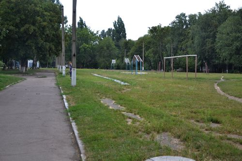

Наша школа №5
Будівництво школи
Наша школа вперше відчинила свої двері 1 вересня 1980 року. Це був рік Московської олімпіади. Саме на честь цієї події на фасаді школи розміщена емблема олімпійських ігор.
Лише наша школа найбільша у місті, наймолодша і найсучасніша. Побудована по типовому проекту Новосибірської філії ЦІТП. Автори проекту – головний інженер інституту А.Ляхович, головний архітектор А.Міхе (1977рік).
Керування
Керував будівництвом Тарасенко Іван Дмитрович – заступник директора з капітального будівництва Вільногірського заводу електровакуумного скла. Завод прийняв на себе шефство над новобудовою і допомагав з обладнанням.
Школа розрахована на 1568 учнів. В перший день до школи прийшли 1450 дітей. Коли вранці вони йшли до школи, їх було так багато, що здавалося, неначе йде на завод робоча зміна.
Звичайно найбільше труднощів випало на долю першого директора школи – Анатолія Михайловича Дмитрука, який був призначений директором ще недобудованої школи. Важко уявити, скільки потрібно було витратити сил та енергії, щоб школа була відкрита вчасно. Необхідно було днювати і ночувати на будівництві.
Молодий, енергійний директор умів домовлятися з усіма, вміло керувати і одночасно комплектувати педколектив майбутньої школи. Але він встиг, і школа 1 вересня зустрічала перших учнів. На святі Першого дзвоника керівництво заводу вручило директору символічний кришталевий ключ від школи, який тепер став одним з експонатів шкільного музею.
Склад школи
Школа складається з 3-х навчальних корпусів. Перший - для навчання, виховання та розвитку учнів початкової школи, другий та третій корпуси – для учнів середньої та старшої ланок.
Загальна площа школи - 3415 кв.метри, кількість навчальних кабінетів – 60, а для фізичного розвитку та оздоровлення передбачено три спортивні зали.
Галерея
- 